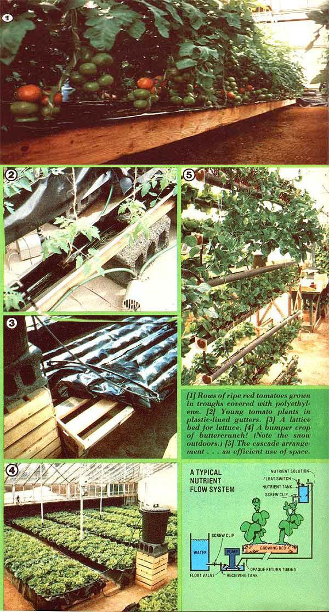

P.A. Schippers describes a new way to "get your feet wet" in hydroponics:
Hydroponic gardening is nothing new to most of MOTHER's readers . . . because the traditional methods of growing plants without soil were all discussed in the "Hydroponics Mini-Manual" that this magazine published on pages 80-84 of our Issue No. 43.
Hand watering, wick growing, and periodic flooding with nutrients (using a pump and timer)-all methods which have their advantages and disadvantages-were described in that story. But now there's a new way to grow plants in liquid culture that offers some significant improvements upon the traditional procedures: It's the Nutrient Flow (or Film) Technique, or NFT.
Based on research begun by England's Dr. A. J. Cooper in 1972, NFT is a system that uses a "film" of nutrient solution . . . which flows continuously over the bottom of the channel containing the plants. The fertile fluid is constantly recirculated, and can be used (with periodic enrichment) for several weeks.
American researchers at the Long Island Horticultural Research Laboratory of Cornell University have been working with NFT since 1975 . . . and they claim the technique's versatility is enormous! For example, unlike other forms of hydroponics, NFT can be used with or without a growing medium (the latter method eliminates the otherwise necessary beds of heavy-and hard to sterilizegravel) . . . it can be set up with either horizontal or vertical growing beds . . . it's practical both indoors and out . . . and it's economical to use and basic in design.
An NFT system is a snap to assemble, too. All that's needed are [1] a growing bed of some sort, [2] two containers (plastic wastebaskets or dishpans are perfect for this job, but avoid unlined metal containers) . . . the first to supply the nutrient-by gravity feed-to the growing bed and the second to act as a receiving basin to collect the fluid after it has trickled past the roots, and [3] a pump, connecting pipes or tubing, and some screw clips to be used as control valves.
The fertilizer solution is contained in the elevated nutrient tank, from which it travels-by way of plastic or rubber hose-to the growing bed. The rate of nutrient flow is easily controlled by a screw clip on the tubing. The liquid passes through the growing bed (which is at a minimum 2 or 3% tilt) and then drains into the receiving (or catchment) tank . . . picking up oxygen as it spills into the receptacle. The fluid completes the cycle when a pump in the lower tank-cued by the tripping of a float switch in the upper container-kicks in and sends the nutrient on its way upward.
In addition, a third tank-which holds water to replace liquid losses caused by transpiration and evaporation-can be added to automate even more of the process. The replacement liquid is introduced into the lower tank when a float valve trips. And that's all there is to it! Basically, the Nutrient Flow Technique system is a closed loop that uses gravity to supply the fertilizer to the growing bed and a pump to raise the liquid back to its starting point.
The NFT approach allows a great deal of flexibility in the layout of the growing beds. Tomatoes and cucumbers started in Kys Kubes or Jiffy-7's (available in most garden supply stores) can, for instance, be grown in sections of plastic roof gutter without any growing medium. Or, if you fill the gutters with several inches of perlite, you can raise cauliflower or other heavy-heading produce. A lattice grid of 2 X 4's-with a sheet of plastic forming channels between the boards-will support a huge crop of butterhead lettuce in a sparse two inches of perlite, while a slightly sloping bed of plywood-with 1" X 6" sides and a polyethylene liner-can be constructed to almost any dimension and used for just about any vegetable from radishes to beets.
Tall plants, such as tomatoes or cucumbers, are common in hydroponic culture, but NFT allows normally "horizontal" crops-such as lettuce, spinach, or even houseplants-to be grown in spacesaving, sun-seeking vertical gardens. Two-inch-diameter PVC pipes-pierced with holes that accommodate preplanted Jiffy-7's-become lush green columns (the nutrient gravity-feeds in at the top . . . moistens the roots as t flows down inside the pipe . . . and is collected at the bottom to be cycled back again). A similar space saver is the "cascade" arrangement, in which slightly sloping (alternately right and left) PVC-pipe beds are positioned one above another. The nutrient solution flows in at the high end of the top pipe, passes from the low end of that tube to the high end of the next one, and zig-zags its way to the bottom . . . feeding the roots all the way down.
It's even possible to make a "radish Aframe" from plywood sheets covered first with plastic and then with capillary matting (sold by greenhouse specialty stores). Simply sew felt weatherstripping onto the matting, and tuck your radish seeds into the flaps. A plastic feed pipe-on top of the structure-delivers a constant stream of nutrient solution, which flows down the matting to catchment gutters at the bottom . . . and then, of course, the liquid is pumped back up to the top.
Since hydroponically grown plants are solely dependent upon the "feed" that you give them for nourishment, careful attention to nutrient formulas and handling techniques will be vital to your water garden's success. There are three factors to consider: the ingredients, pH, and potency of the nutrient solution.
Everyone connected with hydroponics seems to have his or her favorite fertilizer formula. I've had good results with Hydro-Sol-a product of the Robert B. Peters Co., and available from many garden centers-with the addition of anounce of calcium nitrate for each ounce of the commercial product. Two ounces of this mixture will yield 15 gallons of nutrient . . . and will supply all the nitrogen, phosphorus, potassium, magnesium, and calcium (as well as the trace elements iron, boron, copper, zinc, manganese, and molybdenum) that most plants need. Other good commercial mixtures are available from garden centers under the names Hyponex, Dr. Chatelier, and Ra-Pid-Gro . . . and many mailorder suppliers offer their own blends.
Organic gardeners have often expressed concern about the use of chemical plant foods in hydroponics. I must admit that I find the explanation given by James B. DeKorne-MOTHER NOS. 29 (page 68), 39 (page 32), and 48 (page 97) -convincing. Jim says that-while organic fertilizers are clearly superior in soil culture, where bacteria in the growing medium can break down the nutrients to their ultimate (and usable) form -in hydroponics we feed the plant, not the "soil" . . . and the nutrients must be in an already broken-down form for the roots to absorb them. Those who aren't swayed by DeKorne's argument should look at MOTHER NO. 44, page 106, for some all-natural plant food recipes. Pyramid Hydroponics (see Editor's Note) also offers an organic fertilizer.
However he or she may feel about the question of natural vs. manufactured fertilizer, though, there are still two other items that demand the novice hydroponic gardener's attention: maintaining the proper pH in the solution, and assuring the potency of the nutrients. It's easy to monitor the acid/alkaline balance (or pH) with nitrazine paper (available from most any drugstore) or by using test kits sold by hydroponics suppliers.
Plants generally do best with a slightly acid nutrient . . . so a pH of 6 to 6.5 (pH 7 is neutral) is desirable. As the roots remove chemicals from the fertilizer, the pH of the liquid tends to drift toward the alkaline . . . which causes some nutrients (especially iron) to precipitate out, and thus become unavailable to the plants. A small quantity of distilled white vinegar-remember that a teaspoon of the acidic liquid per gallon of nutrient will drop the pH by two points!-will restore the proper "sourness" to the solution . . . while you can make the fluid more alkaline (less often a problem) by adding a small amount-monitored by nitrazine paper tests-of lime or bicarbonate of soda.
Most plant food manufacturers have adopted a "baby with the bath water" approach to maintaining nutrient potency. Since the chemical analysis of hydroponic fertilizer is an exacting (and expensive) process, the advice usually offered is to chuck the soup out after a week or two . . . preferably under a favorite fruit tree, where it might do some good! However, Hydroponic Growing Systems-a supplier that specializes in the NFT method-does offer a kit that permits a simple test of chemical strength . . . and that can help you avoid tossing out a jug of nutrient before its time.
The Nutrient Flow Technique is enormously versatile, but certain sites are more appropriate to its use than are others. Given the amount of plumbing involved in hydroponics, for instance, living rooms are probably not the ideal place to set up an NFT system. And-unless you're planning to grow houseplants (which can flourish under fluorescent lights)-the dark corner of your basement is out of the question. A greenhouse, of course, is an ideal location for an NFT installation . . . and enormous quantities of vegetables can be raised in even a small, sunny spare room. In addition, don't forget that (given a receiving tank big enough to hold any overflow caused by rainfall) all sorts of crops can be grown outside . . . in the country, suburbs, or inner city! Apartment roofs, narrow urban back yards, small waste places . . . all can be turned into gardens of plenty with NFT!
EDITOR'S NOTE: Equipment that's designed for NFT-Plus a 60-page report on the method (titled "The Nutrient Flow Technique for Growing Plants") which costs $3.25 plus 35 cents for shipping-may be ordered from Hydroponic Growing Systems, Dept. TMEN, P.O. Box 252, Calverton, New York 11933. And here are some other mail-order sources for fertilizers and equipm cut.
Aqua-Ponics, Inc.
Dept. TMEN
17221 East 17th Street
Santa Ana, California 92701
Charley's Greenhouse Supply
Dept. TMEN
12815 N. E. 124th Street
Kirkland, Washington 98033
(catalog $1.00, refunded with purchase)
Eco Enterprises
Dept. TMEN
2821 N. E. 55th Street
Seattle, Washington 98105
Hydro Gardens
Dept. TMEN
P.O. Box 9707
Colorado Springs, Colorado 809.32
Pyramid Hydroponics
Dept. TMEN
701 West Ivy
Glendale, California 91204
Washington Water Works
Dept. TMEN
7417N.E. 170th Street
Bothell, Washington 98011
Don't forget that the back issues of MOTHER mentioned in this article are available (for $3.00 each plus $1.00 shipping and handling per order) from THE Mother Earth News (restricted) , P.O. Box 70, Hendersonville, North Carolina 28739.
Finally, there's a group just forming that will be of enormous help to the water gardener: The Hydroponic Society of America. For information about membership, write to the society at P.O. Box 516, Brentwood, California 94513.
|
 |
|
|